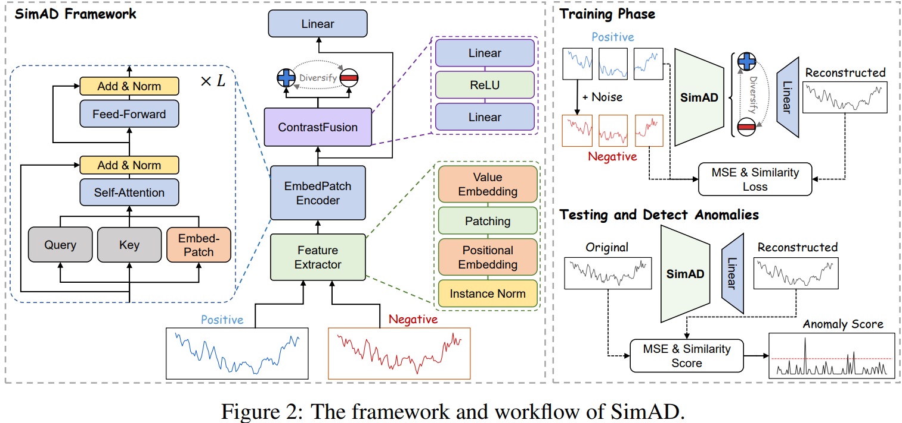

Despite the prevalence of reconstruction-based deep learning methods, time series anomaly detection remains a tremendous challenge. Existing approaches often struggle with limited temporal contexts, insufficient representation of normal patterns, and flawed evaluation metrics, all of which hinder their effectiveness in detecting anomalous behavior. To address these issues, we introduce a Simple dissimilarity approach for time series Anomaly Detection, referred to as SimAD. Specifically, SimAD first incorporates a patching-based feature extractor capable of processing extended temporal windows and employs the EmbedPatch encoder to fully integrate normal behavioral patterns. Second, we design an innovative ContrastFusion module in SimAD, which strengthens the robustness of anomaly detection by highlighting the distributional differences between normal and abnormal data. Third, we introduce two robust enhanced evaluation metrics, Unbiased Affiliation (UAff) and Normalized Affiliation (NAff), designed to overcome the limitations of existing metrics by providing better distinctiveness and semantic clarity. The reliability of these two metrics has been demonstrated by both theoretical and experimental analyses. Experiments conducted on seven diverse time series datasets clearly demonstrate SimAD's superior performance compared to state-of-the-art methods, achieving relative improvements of 19.85% on F1, 4.44% on Aff-F1, 77.79% on NAff-F1, and 9.69% on AUC on six multivariate datasets. Code and pre-trained models are available at https://github.com/EmorZz1G/SimAD.

@ARTICLE{zhong2025simad,
author={Zhong, Zhijie and Yu, Zhiwen and Xi, Xing and Xu, Yue and Cao, Wenming and Yang, Yiyuan and Yang, Kaixiang and You, Jane},
journal={IEEE Transactions on Neural Networks and Learning Systems},
title={SimAD: A Simple Dissimilarity-Based Approach for Time-Series Anomaly Detection},
year={2025},
volume={},
number={},
pages={1-12},
doi={10.1109/TNNLS.2025.3590220}}